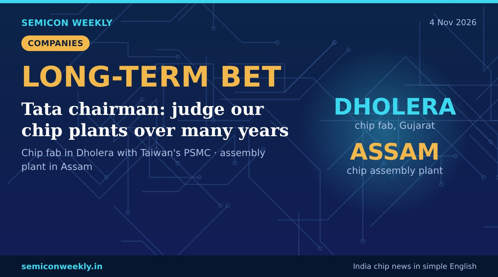

Tata chairman: chip plants are a long-term bet on India
Tata's chip plants will take years to pay off, and India still needs global partners for the technology.

In short
- Tata Sons chairman N Chandrasekaran says Tata's chip business should be judged over many years, not two or three.
- Tata Electronics is building a chip fab in Dholera, Gujarat, with Taiwan's PSMC, and a chip assembly plant in Assam.
- He said India needs partners because it does not yet have all the technology.
Key numbers
DholeraChip fab, Gujarat (with PSMC)
AssamChip assembly and test plant
Many yearsHow long to judge the bet
What happened
- Tata Sons chairman N Chandrasekaran spoke about Tata's semiconductor plans.
- He said the chip business is a long-term bet and should not be judged over just two or three years.
- Tata Electronics is building India's chip fab in Dholera with Taiwan's PSMC, and a chip assembly plant in Assam.
- He said India needs technology partners because it does not yet have all the know-how.
Why it matters
Why this is useful
- Chip plants cost a lot and take years to reach full output, so patience is normal in this industry.
- Working with an experienced partner like PSMC helps India learn chipmaking faster.
Why it is good for freshers
- Tata plans to stay in chips for the long run, so fab and packaging careers in Gujarat and Assam can grow for years.
- Learn process basics: lithography, etching, deposition, yield and clean-room work.
- Packaging and testing skills are useful for the Assam plant.
Why it is good for India
- A home-grown chip maker reduces India's dependence on imported chips.
- Each plant brings suppliers, technicians and engineers to new regions.
Words in this story
- Fab: a factory that makes chips on silicon wafers.
- Chip assembly and test (OSAT): the step where finished wafers are cut, packed into chips and tested.
- PSMC: Powerchip Semiconductor Manufacturing Corporation, a Taiwanese chipmaker and Tata's partner.